地政学
ポートモレスビーは豪州、インドネシア、太平洋島嶼、アジア資本の間に置かれた首都です。国会、港、空港、援助機関、大使館、資源外交が集まり、山岳と島々を束ねる国家の交渉窓口です。地域安全保障も映します。
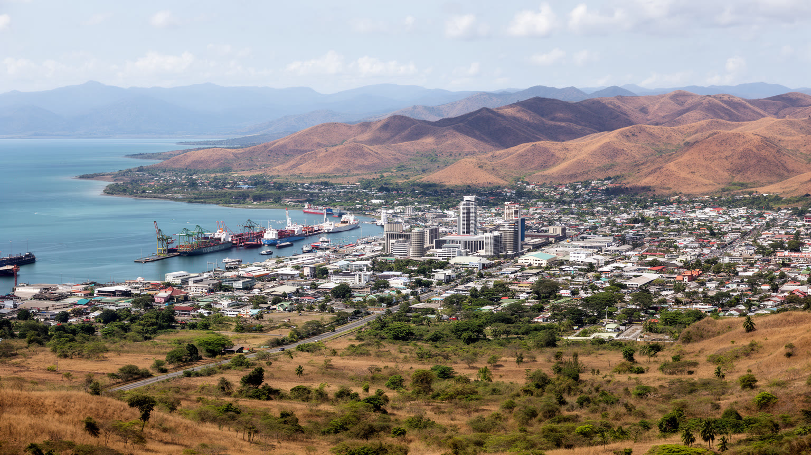
🇵🇬 パプアニューギニア / 首都区 / World City Atlas
パプア湾の乾いた丘陵に広がる首都です。国会、港、空港、市場、非公式居住地、モツ・コイタブの土地、鉱業経済、教会、治安、防災が近い距離で重なる都市です。
都市の骨格
ポートモレスビーはパプア湾に面し、背後には乾いた丘陵と村落の土地が連なります。港、空港、国会、市場、住宅地が、狭い道路と斜面に沿って結ばれます。
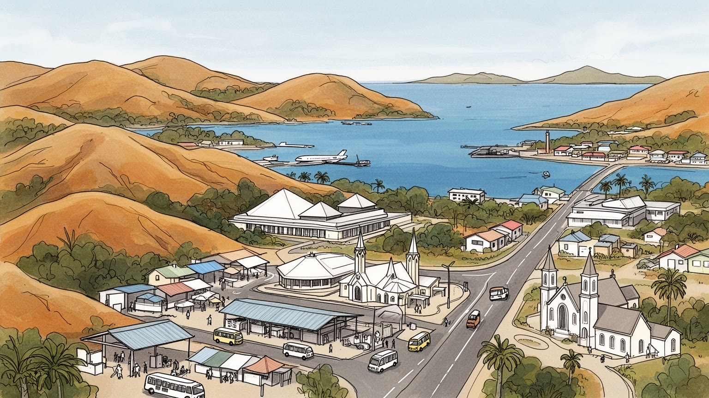
ポートモレスビーは豪州、インドネシア、太平洋島嶼、アジア資本の間に置かれた首都です。国会、港、空港、援助機関、大使館、資源外交が集まり、山岳と島々を束ねる国家の交渉窓口です。地域安全保障も映します。
行政、港湾、建設、小売、警備、交通、教育、医療に加え、鉱山やLNG関連の本社・調達機能が首都経済を押します。現場労働、露店販売、家族送金も大きく、物価高の中で市場とミニバスが家計を支えます。夜勤も多いです。
モツ・コイタブの土地、ヒリ交易の記憶、トク・ピシン、ヒリモツ、英語、教会、各地方の言語が交わります。礼拝の合唱、ラグビーリーグ、学校行事、親族儀礼、ラジオの音楽が都市生活の支えです。祭りも重要です。
旅行者は国会議事堂、博物館、自然公園、湾岸、村落を訪ねるが、住民は水、道路、住宅、治安、学校、医療、雇用に向き合います。夜の移動、市場の買い物、子どもの通学、ラジオやSNSも日常を映します。買い物も濃いです。
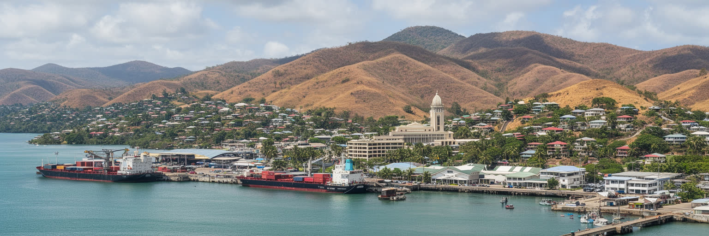
ポートモレスビーは、湿った熱帯雨林のイメージとは少し違います。市街地の周囲には乾季に茶色くなる丘が続き、パプア湾の入り江、貨物港、国会、官庁、銀行、ホテル、商店、住宅地が斜面と谷に沿って広がります。首都でありながら、国内の多くの地域とは道路で直結していないため、空港と海上輸送の意味が非常に大きいです。港には燃料、食品、建材、機械、輸入消費財が入り、資源開発や公共工事の物資も通ります。国会や官庁で決まる予算、警察、学校、医療、土地制度、資源契約は、遠い高地や島嶼の生活にも影響します。ポートモレスビーを読む時は、湾岸の景観を単なる眺めではなく、国家運営の実務が集まる場所として見る必要があります。港の効率、道路の渋滞、空港の安全、電力と水道の安定は、首都の便利さだけでなく国全体の信頼に関わります。丘の上から湾を見下ろす景色の下では、官僚、港湾労働者、警備員、市場の売り手、運転手、ホテル従業員がそれぞれ異なる時間で働きます。朝は排気音と港の金属音が重なり、夕方には商店前の買い物客とスクールバスが道路を詰まらせます。首都機能の集中は、政治の見えやすさと同時に脆さも作ります。だからこの都市の中心は、高い建物ではなく、港、空港、議会、丘陵住宅地を結ぶ細い回路にあります。湾を横切る風や乾いた斜面の色も、首都が置かれた自然条件を日々思い出させます。
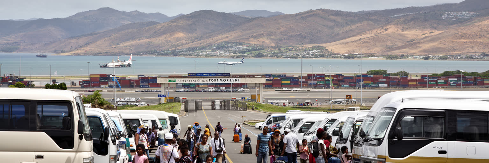
パプアニューギニアの地理は、首都の役割を複雑にしています。国土はニューギニア島東部の山岳、沿岸低地、島嶼、ブーゲンビルまで広がり、多くの集落は険しい山や海に隔てられています。ポートモレスビーは最大都市ですが、国内各地との移動は道路より航空便や船便に頼る場面が多いです。ジャクソン国際空港は国際線と国内線の結節点で、地方から来る学生、公務員、患者、商人、ラグビーリーグや陸上の選手、家族がここを通ります。港は南岸の物流を支え、食料や燃料、建材、鉱山関連の機材が市内へ入ります。距離は地図上のキロ数ではなく、航空券の値段、天候、滑走路の状態、港湾の混雑、治安、荷物を運べるかで決まります。首都へ出ることは、地方の人にとって進学や医療への入口である一方、生活費の高い都市へ入るリスクでもあります。交通の結節点としてのポートモレスビーは、国内の不平等を見せる場所でもあります。移動できる人は行政や仕事へ近づき、移動できない人は制度から遠くなります。空港道路、港湾アクセス、公共交通、歩道の質は、観光客の快適さだけでなく、地方住民が首都のサービスへ届くかを左右します。航空と海上輸送に依存する都市では、燃料価格や部品不足も暮らしに直結します。玄関としての強さは、豪華なターミナルより、地方の人が安全に安く使える接続に表れます。移動の公平さは国家統合の基盤にもなり、空港ロビーの再会や別れにもその重みが表れます。
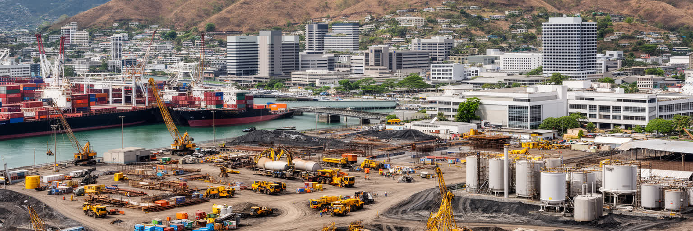
ポートモレスビーの経済は、首都行政と港湾だけでなく、パプアニューギニア全体の資源開発と深く結びつきます。高地や沿岸で採掘される金、銅、石油、天然ガス、LNGの契約、税収、調達、法律、警備、金融、コンサルティングは、首都のオフィスや官庁で扱われることが多いです。資源プロジェクトは国家歳入を押し上げる一方、雇用が限られ、利益が地域へ十分届かないという批判もあります。都市では建設、道路工事、ホテル、警備、運転、清掃、事務、飲食、小売が資源景気の波を受けます。大型案件が進む時は家賃や物価が上がり、停滞すれば仕事が減ります。公務員や専門職の所得と、露店、ミニバス、日雇い、家事労働に頼る人々の生活は大きく異なります。首都の近代的なオフィス街だけを見ると、都市を支える不安定な労働が見えにくいです。物価の高い首都では、地方から届く食料、親族の支援、週末の市場販売、携帯電話の小口決済、警備の夜勤、学校費用を補う副業が家計を支えます。資源経済を読むとは、輸出額を見るだけではなく、その収入が道路、水道、学校、病院、治安、住宅へ変わっているかを問うことでもあります。ポートモレスビーは、天然資源の国際市場と、都市の毎日の労働が同じ場所で接触する首都です。大きな契約の数字と、市場で支払うバス代や食費の上昇はつながっています。成長の恩恵をどう広く配るかが、この都市の政治的な焦点になります。
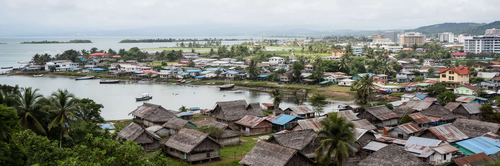
ポートモレスビーは、近代国家の首都である前に、モツ・コイタブの人々が暮らしてきた土地にあります。海辺の村、漁労、ヒリ交易、土器、親族関係、儀礼、土地の記憶は、官庁街や港湾、住宅地の下に残ります。都市が拡大し、道路、ホテル、住宅団地、商業施設、公共用地が増えるほど、慣習的な土地権と都市開発の緊張は強くなります。土地は単なる資産ではなく、祖先、家族、村の責任、墓地、海へのアクセス、共同体の尊厳と結びつきます。都市計画がこの歴史を軽く扱えば、補償、移転、借地、境界、政治代表をめぐる不信が残ります。モツ・コイタブの存在は、観光向けの伝統文化だけではありません。首都の正統性、海辺の公共空間、若者の教育、言語の継承、土地収入の使い方に関わる現在の論点です。ヒリ・モアレ祭の踊りやカヌーの記憶は、写真向けの飾りではなく、海と交易に根差した都市の履歴を語ります。地方から来た住民も増え、首都は全国の民族と言語が交わる場になりました。その多様性を支えるには、先住の土地を尊重しながら、移住者にも安全な住まいと公共サービスを届ける調整が必要になります。土地をめぐる合意が弱いまま都市が成長すると、住宅不足、立ち退き、非公式居住地、治安不安が重なりやすいです。ポートモレスビーの地図を読む時、道路や区画だけでなく、誰の土地で、誰が決定に参加し、誰が利益と負担を受けるのかを見なければなりません。先住の記憶を都市の未来に含められるかが、首都の成熟を決めます。
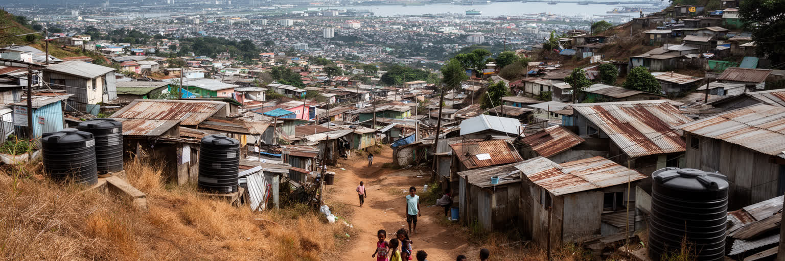
ポートモレスビーの暮らしを理解するには、住宅を避けて通れません。公務員や企業幹部が住む警備付き住宅、外国人向けの高い賃貸、郊外の新興住宅、親族が集まる一般住宅、非公式居住地が、丘陵と谷に入り組んで並びます。地方から仕事や学校を求めて来た人は、親族や出身地のつながりを頼って住まいを見つけることが多いですが、水道、排水、電気、道路、学校、診療所、警察への近さは場所によって大きく違います。家賃が高い都市では、仕事があっても安定した住居を確保できず、斜面や洪水に弱い土地、土地権が不確かな場所に住む人も増えます。非公式居住地はしばしば問題視されますが、そこには労働者、露店商、学生、子どもを預かる親族、高齢者、教会、地域の相互扶助があります。都市を支える人が住む場所を確保できなければ、交通、治安、健康、教育の問題はさらに深くなります。住宅政策は建物を増やすだけでなく、土地の合意、公共サービス、通勤費、若者の仕事、女性の安全、災害への備えを一体で考える必要があります。狭い道や排水の不足は雨季にすぐ生活を脅かし、停電や断水は家事と宿題を止めます。夜は明かりの少ない坂道やバス停が移動の不安を大きくします。ポートモレスビーの丘を歩くと、首都の成長が誰に広がり、誰を周縁へ押し出しているのかが見えてきます。住まいを都市の中心課題として扱えるかが、治安や経済の改善にもつながります。
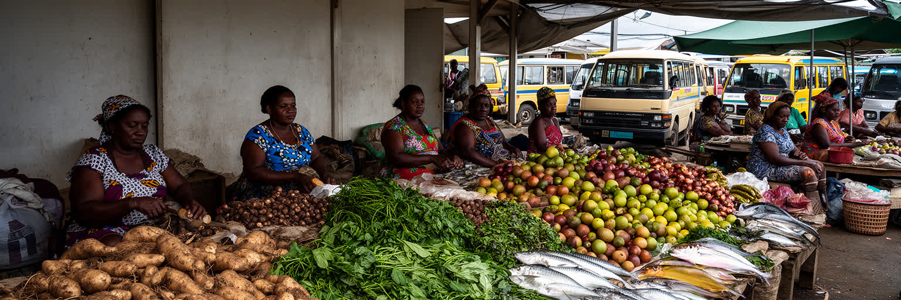
ポートモレスビーの市場は、首都の食と地方とのつながりを濃く映します。高地や沿岸、周辺村落から届く野菜、根菜、果物、魚、ベテルナッツ、手仕事の品が並び、売り手、買い物客、ミニバス、警備、子ども、観光客が混じます。市場は食料を売る場所であると同時に、親族への送金、学費、葬儀や教会行事の費用を作る現金収入の場でもあります。女性の販売労働は都市の家計を支えますが、衛生、日陰、保管、トイレ、安全、暴力からの保護が弱ければ負担は大きいです。首都では輸入食品や加工食品も増え、スーパーやショッピングセンターの買い物も広がりますが、物価が高い時ほど市場の根菜や野菜は重要になります。道路事情や燃料価格、治安、雨季の土砂崩れは、地方からの供給と価格に直結します。市場を見ると、パプアニューギニアの多様な地域が首都でどのように出会っているかが分かります。売り場の言葉はトク・ピシンを軸にしながら、出身地の言語や関係を運びます。魚の匂い、焼いた肉の煙、ベテルナッツの赤い跡、バスの呼び声は、都市の午前を作ります。公共投資で市場が安全で清潔になれば、食料の損失が減り、売り手の収入も安定します。市場は貧しさの象徴ではなく、地方の畑、都市の家計、女性の労働、公共サービスが交わる社会の基盤です。ここを読むことは、首都の生活費と地方経済を同時に読むことになります。朝の荷下ろしから夕方の片付けまで、都市の食は多くの手で保たれます。
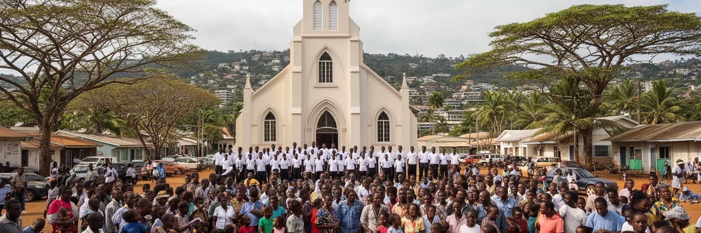
ポートモレスビーには、パプアニューギニア各地から来た人々の言語、親族関係、教会が集まります。国内には非常に多くの言語があり、首都ではトク・ピシン、英語、ヒリモツ、出身地の言語が場面によって使い分けられます。役所や学校、企業では英語の力が機会を左右し、市場やミニバスではトク・ピシンが広い共通語になります。教会は日曜礼拝だけでなく、学校、青年会、女性会、葬儀、結婚、相談、地域の安全、災害時の支援を担います。地方から来た人にとって、同じ出身地の教会や会衆は都市で孤立しないための足場になります。宗教は都市の道徳や政治の言葉にも影響し、家族、性別、暴力、教育、腐敗をめぐる議論の場にもなります。多言語社会は豊かさである一方、行政手続き、医療、警察、学校で言葉が壁になることもあります。首都が包摂的であるためには、翻訳や相談、地域の仲介者、学校での支援が必要になります。都市の文化は、公式行事や博物館だけでなく、礼拝後の食事、合唱、ゴスペルやポップ音楽、ラジオ、親族会議、葬儀の準備、ラグビーリーグやサッカーに現れます。ポートモレスビーで暮らすことは、村とのつながりを失うことではなく、村、教会、学校、職場の関係を都市の中で組み直すことでもあります。言語と信仰は、危機の時に人が助けを求める経路にもなります。そこに首都社会の見えにくい強さがあります。違いを調整する力が、都市の平和を支えます。
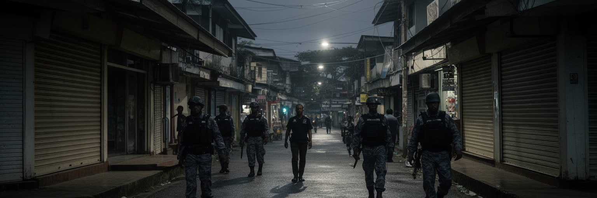
ポートモレスビーは、治安の課題を抜きに語れない都市です。強盗、車両犯罪、性暴力、部族間・地域間の緊張、選挙時の混乱、失業した若者の不満は、住民の移動、商売、通学、夜の外出、観光の印象を左右します。多くの住宅、商店、ホテル、オフィスは警備員や柵に頼り、移動にも信頼できる車や知人の助けが重視されます。ですが治安を単に犯罪だけで見ると、背景にある住宅不足、若者の雇用、教育、アルコール、土地紛争、警察への信頼不足、公共照明や交通の弱さを見落とします。都市の安全は、警察力だけでなく、学校に通えること、仕事があること、女性が市場やバス停を安心して使えること、地域の指導者と行政が対話できることで支えられます。警備付き空間が増えるほど、富裕層と低所得者の生活圏は分かれ、公共空間の信頼は弱くなります。ポートモレスビーを読むには、危険という評判だけで都市を閉じるのではなく、どの場所で誰が不安を感じ、誰が安全を買え、誰が公共サービスから遠いのかを具体的に見る必要があります。治安情報は口コミ、ラジオ、新聞、FacebookなどのSNSでも共有され、渋滞や事件の知らせが移動の判断を変えます。治安改善は観光や投資のためだけではありません。子どもが学校へ行き、女性が市場で働き、若者が夜に帰宅できるための生活基盤です。地域の調停、照明、公共交通、警察改革、雇用、住宅政策が結びついて初めて、首都の安全は持続します。安全は都市への信頼を作ります。
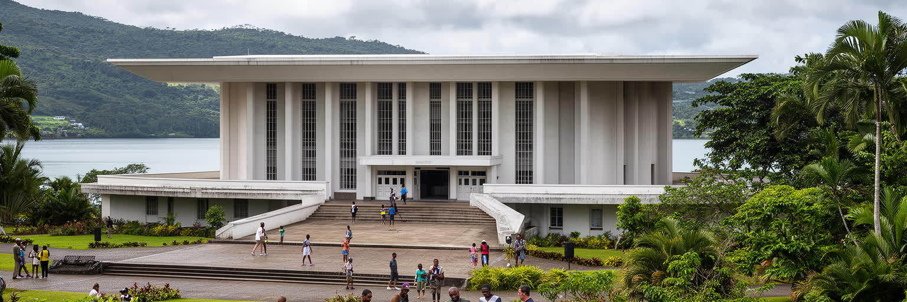
ポートモレスビー観光は、リゾート都市のように歩いて名所を巡る形とは異なります。国会議事堂、国立博物館・美術館、自然公園、戦争墓地、湾岸、周辺の村落、近郊の島やビーチを、車やガイドと組み合わせて訪ねることが多いです。国会の建築や博物館の展示は、国内の多様な民族、仮面、船、交易、植民地史、独立後の国家形成を理解する入口になります。湾岸や自然公園は、乾いた丘陵都市の中で海と生態系を感じる場所であり、旅行者には首都の別の表情を見せます。ですが観光の成否は、名所の数だけでは決まらありません。治安、交通、案内、トイレ、清掃、料金の透明性、地域へ利益が戻る仕組みが整って初めて、訪問は住民にも意味を持ちます。文化を見せる時には、儀礼や装飾を単なる見世物にせず、作り手や共同体が自分たちの歴史を説明できることが重要になります。ポートモレスビーの観光は、短い滞在で国全体を代表しがちな難しさを抱えます。高地、島嶼、沿岸の文化を首都の展示やイベントで見せる時、地域ごとの違いや政治的な背景を丁寧に扱う必要があります。旅行者が安全に学べる都市は、住民にとっても使いやすい公共空間を持つ都市です。観光を育てることは、博物館、道路、案内、地域文化、若者の雇用を同時に整える都市政策でもあります。首都を訪ねる旅は、国の複雑さへの入口であるべきです。案内の質は都市の信頼を高めます。
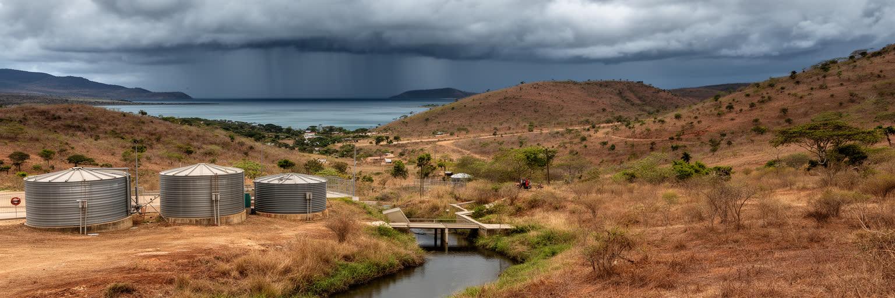
ポートモレスビーの気候は、パプアニューギニアの中でも比較的乾いた熱帯サバナ型で、乾季には丘が褐色になり、水の管理が都市生活の大きな条件になります。雨季には短時間の強い雨が道路、斜面、排水、低地の住宅地を試します。乾燥と豪雨が交互に来るため、都市には貯水、漏水対策、排水路、斜面管理、道路舗装、日陰、暑さへの備えが必要になります。水道へ安定して接続できる世帯と、給水車や共同水栓、雨水、購入水に頼る世帯では、衛生、家事、学習、仕事の負担が大きく違います。電力不足や停電はポンプ、冷蔵、通信、医療にも影響します。気候変動は、降雨の強さ、暑さ、海岸部のリスクを高め、都市の弱い基盤をさらに露出させます。ポートモレスビーの環境問題は、遠い自然保護ではなく、毎日の水、道路、ごみ、暑さ、感染症、住宅の安全に関わります。乾いた丘陵地で無計画に住宅が広がれば、木陰が失われ、土砂が流れ、雨季の排水が悪くなります。公共施設や市場に日陰と水があるかどうかは、働く人の健康にも直結します。湾岸の開発では、排水とごみが海へ流れ込まない設計が欠かせません。気候に強い首都とは、災害後に直すだけでなく、平時から水と涼しさを公平に配る都市です。インフラの質は、住民の時間と体力を左右します。乾季の節水と雨季の排水を同時に設計することが、都市の基礎になります。大切です。
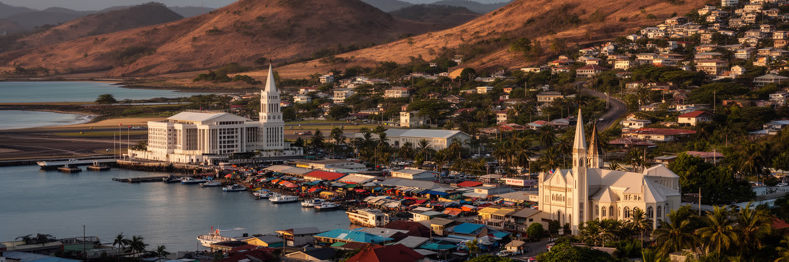
ポートモレスビーは、世界的な金融都市ではありませんが、国家の難しさが都市空間に濃く現れる首都です。パプア湾の港、ジャクソン国際空港、国会、官庁、資源企業の事務所、丘陵住宅地、市場、教会、非公式居住地、モツ・コイタブの土地が、限られた道路網の中で互いに接しています。ここには、資源収入と都市貧困、先住の土地と国家開発、多言語社会と行政、治安不安と若者の機会、乾季の水不足と雨季の排水、観光の期待と住民の日常が同時にあります。都市を危険な場所としてだけ見ると、住民が毎日作っている市場、教会、親族支援、学校、労働の力を見落とします。逆に首都の近代的な施設だけを見ると、住宅不足や公共サービスの不均衡を隠してしまいます。ポートモレスビーを読むことは、パプアニューギニアという多様な国家が、都市の狭い空間でどう交渉し、衝突し、支え合っているかを見ることです。湾岸の美しい光、国会の屋根、市場の声、警備の柵、丘の未舗装路、教会の合唱は、別々の風景ではありません。すべてが、首都が国全体を代表しながら、国全体の不平等と希望を背負っていることを示します。重要なのは、都市の欠点を隠すことではなく、誰がそこに住み、働き、移動し、祈り、学び、危険を引き受けているのかを具体的に見ることです。ポートモレスビーは、巨大ではありませんが、現代の太平洋国家を読むための強い入口です。